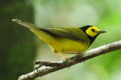
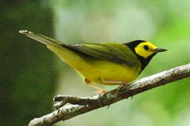

| Hooded Warbler | |
|---|---|
|  | |
| Adult male | |
| Conservation status | |
| Binomial name | |
| Wilsonia citrina (Boddaert, 1783) |
| Hooded Warbler | |
|---|---|
|  | |
| Adult male | |
| Conservation status | |
| Binomial name | |
| Wilsonia citrina (Boddaert, 1783) |
The Hooded Warbler, Wilsonia citrina, is a New World warbler. It breeds in eastern North America and across the eastern USA and into southernmost Canada, (Ontario). It is migratory, wintering in Central America and the West Indies. Hooded Warblers are very rare vagrants to western Europe.
The Hooded Warbler has a plain olive/green-brown back, and yellow underparts. Their outer rectrices have whitish vanes. Males have black hoods which surround their yellow faces; the female has an olive-green cap which does not extend to the forehead, ears and throat instead. Males attain their hood at about 9–12 months of age; younger birds are essentially identical to (and easily confused with) females.[2] The song is a series of musical notes which sound like: wheeta wheeta whee-tee-oh, for which a common pneumonic is "The red, The red T-shirt". The call of these birds is a loud chip.
These birds feed on insects, which are often found in low vegetation or caught by flycatching. Hooded Warblers' breeding habitats are broadleaved woodlands with dense undergrowth. These birds nest in low areas of a bush, laying 3-5 eggs in a cup-shaped nest. Hooded Warblers are often the victims of brood parisitism by the Brown-headed Cowbird, especially where the Hooded Warblers' forest habitats are fragmented.

.jpg){kind=link}
{kind=link}